Dr. Soumen Biswas
Senior Member IEEE
Chief Researcher, Research & Development Center, Hitachi India
- AI/ML
- GenAI
- Computer Vision
- Vision and LLM
- Agentic AI
Scholar Impact
AI/ML researcher with over 14 years of experience in total, including 11+ years specializing in Computer Vision, Large Language Models (LLMs), and Vision-Language Models (VLMs). Skilled in building scalable models and full-stack ML solutions for real-world industrial applications across transportation, manufacturing, and healthcare. Proven track record in leading research teams, developing PoCs, and deploying optimized models on cloud and edge platforms. Actively contributing to patents and high-impact publications in leading venues such as IEEE Symposiums, IEEE Big Data, ICMLA, ICPR, WACV, Scientific Reports (Nature Journal) and top-tier journals.
GenAI & LLM/VLM Expertise
Professional Recognition & Awards
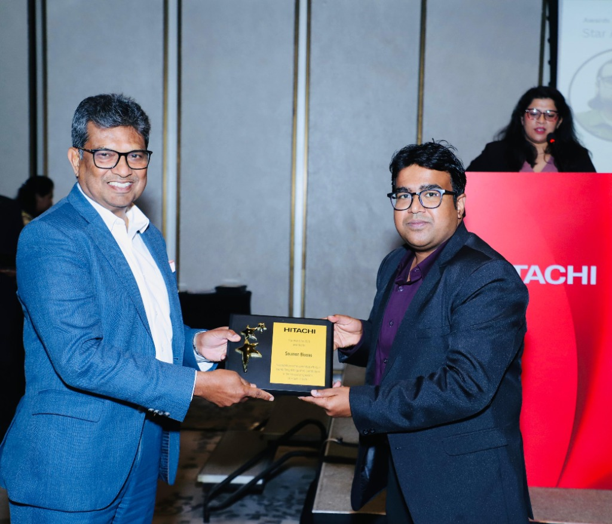
Hitachi Star Award
Year 2025
Received the prestigious Star Award for excellence and contributions in the year 2025.
Industrial Hackathon (Hitachi R&D)
Feb 2023
Associated with Hitachi. The team won the Industrial Hackathon 2023.
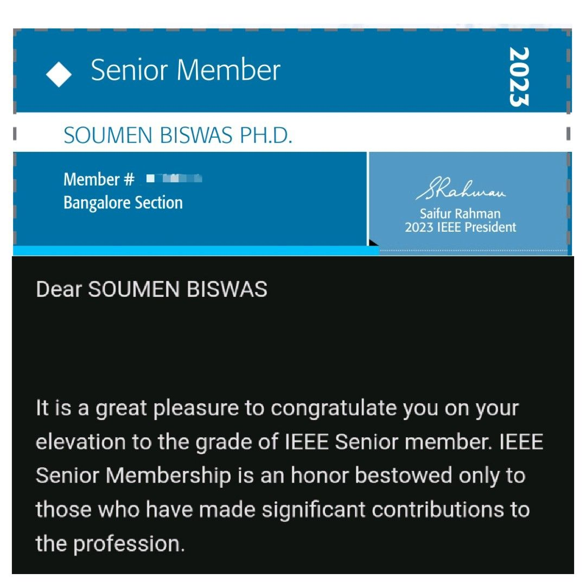
IEEE Senior Member
Year 2023
IEEE Senior Member – Elevated in recognition of significant contributions to AI/ML, Computer Vision, and intelligent systems.
Professional Journey
Chief Researcher
R&D Center, Hitachi India, Bangalore, India
- Leading GenAI and multimodal AI research initiatives focused on Vision-Language Models (VLMs) for industrial applications
- Designed and fine-tuned domain-adapted multimodal foundation models for structured extraction from P\&ID diagrams and flowcharts
- Built LLM-powered question-answering systems using prompt engineering and LLM-as-a-judge evaluation pipelines
- Introduced neuro-symbolic reasoning techniques to improve interpretability and logical consistency of AI systems
- Driving end-to-end development from research to production deployment across enterprise use cases
Senior Researcher
R&D Center, Hitachi India, Bangalore, India
- Led development of AI/ML systems across automotive, infrastructure, and manufacturing domains
- Integrated LLMs into video analytics systems to provide contextual insights and natural language interaction
- Built multimodal AI pipelines combining computer vision and LLM reasoning for real-time decision support
- Delivered production-aligned AI solutions from research prototypes
- Collaborated with global R\&D teams to drive innovation and PoC development
Senior Technical Lead
HCL Technologies Ltd. Chennai, India
- Led computer vision R\&D initiatives translating into scalable industrial AI solutions
- Developed high-accuracy defect detection systems for steel inspection
- Designed lightweight models for edge deployment in human activity recognition
- Led semiconductor wafer defect detection project (Client: KLA), aligning research with business impact
- Played a key role in problem definition and solution design for novel industrial AI use cases, resulting in publications in reputed conferences and collaborative innovation initiatives.
- Project Lead – Client: KLA-Tencor (California, USA) [April 2022 – Nov 2022]: Led a dynamic team on semiconductor wafer defect detection. Designed high-precision detection algorithms to support yield optimization, and collaborated closely with client stakeholders to align research with business goals.
Research Fellow
National Institute of Technology Silchar, Dept. of E&IE Silchar, India
- Conducted advanced research on active contour models and level set formulations to improve segmentation performance in real and medical images, achieving higher accuracy and robustness across diverse datasets.
- Designed end-to-end AI pipelines incorporating data preprocessing, feature extraction, and disease classification using ML/DL approaches as part of a Government-funded research project, contributing to the development of automated diagnosis frameworks.
- Built and deployed cloud-based diagnostic applications using Streamlit and FastAPI for real-time healthcare analytics, developed under a Govt.-sponsored initiative to support accessible AI tools in medical diagnostics.
- Engaged in international collaborative projects with Anhui University (China), IIR Singapore, and national institutions, contributing to joint publications and knowledge exchange in biomedical AI.
- Awarded the MHRD Research Fellowship by the Government of India for academic excellence to pursue Ph.D.
Assistant Professor
Dream Institute of Technology, Dept. of ECE Kolkata, India
- Taught core courses in image processing, machine learning, and computer vision, while mentoring undergraduate research projects and contributing to publications in journals and conferences on visual analysis and segmentation techniques.
Faculty
The Gate Academy Kolkata, India
- Delivered structured classroom instruction for competitive engineering entrance preparation (GATE), with a focus on foundational subjects in electronics and signal processing.
Selected AI & GenAI Projects
Multimodal VLM for Industrial Diagram Understanding
Developed a Vision-Language Model system for structured extraction and semantic reasoning from P&ID diagrams and flowcharts.
VLM | LLM | Multimodal AI | TransformersLLM-powered Video Analytics Assistant
Built an intelligent assistant integrating LLMs with video analytics to provide contextual insights and natural language interaction for surveillance systems.
LLM | Computer Vision | Real-time SystemsNeuro-symbolic AI for Industrial Reasoning
Designed a hybrid AI framework combining neural models and symbolic reasoning to improve interpretability and logical consistency in industrial workflows.
Neuro-symbolic AI | Reasoning | GenAIIndustrial Steel Defect Detection System
Developed a high-accuracy deep learning-based inspection system for steel surface defect detection, progressing from PoC to deployment.
Computer Vision | Deep Learning | PyTorchWafer Alignment Algorithm for Semiconductor Inspection
Designed a high-precision alignment algorithm for semiconductor wafer inspection systems, improving positioning accuracy in manufacturing pipelines.
Computer Vision | Optimization | Industrial AIExternal Associations & Speaking Engagements
Editorial & Peer Review Contributions
- Editor: Scientific Reports Journal (Nature Portfolio).
- Peer Reviewer: Served as a peer reviewer for reputed journals including IEEE Access, IEEE Transactions on Circuits and Systems for Video Technology, IEEE Journal on Biomedical and Health Informatics, IET Image Processing, IET Signal Processing, Circuit, Systems and Signal Processing, and Engineering Applications of Artificial Intelligence (Elsevier).
Invited Talks, Workshops & Technical Engagements
- Delivered an invited talk on "Agentic AI: Redefining Autonomy in Intelligent Systems" at the Fourth International Conference on Applied Data Science (ICADS) 2025 in Los Angeles, hosted by the IEEE Computer Society.
- Invited as Chief Guest for the SmartBIZ Hackathon 2026, organized by Presidency University, Bangalore.
- Spearheaded the organization of "VISISONICS AI'26," a national-level hackathon co-organized by Hitachi India R&D and the ECE Department of Manipal Institute of Technology, Bangalore.
- Delivered invited lectures and technical talks across leading academic institutions and research forums, focusing on computer vision, machine learning, and AI applications.
- Organized workshops at premier IEEE conferences, including IEEE ICMLA 2023, IEEE Big Data 2024, and IEEE AISP 2024, facilitating knowledge exchange on emerging AI topics.
- Presented an invited session titled "Computer Vision: Artificial Intelligence and Image Processing" at IEEE AISP'23, hosted by VIT-AP University and sponsored by IEEE Hyderabad Section.
- Served as session chair for multiple technical tracks at renowned IEEE international conferences, contributing to peer review and panel moderation.
- Conducted expert training sessions on "LaTeX for Beginners" at NIT Silchar, promoting documentation and publishing best practices among early researchers.
Event Highlights & Glimpses
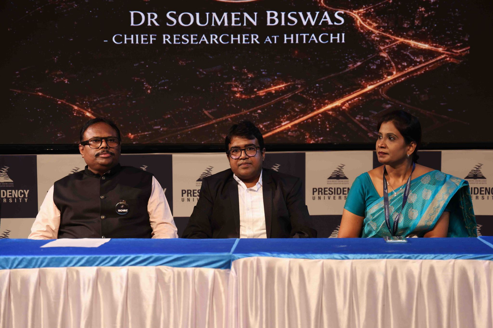
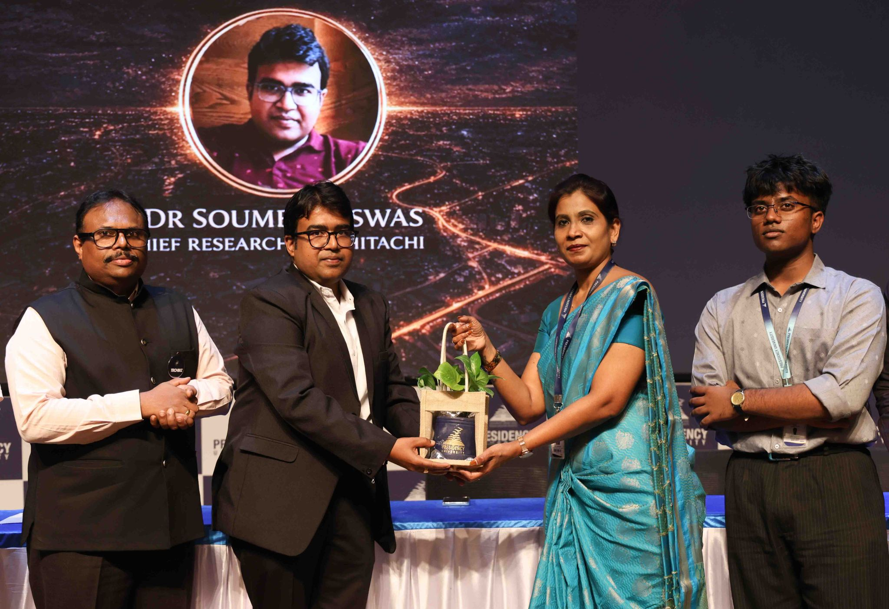
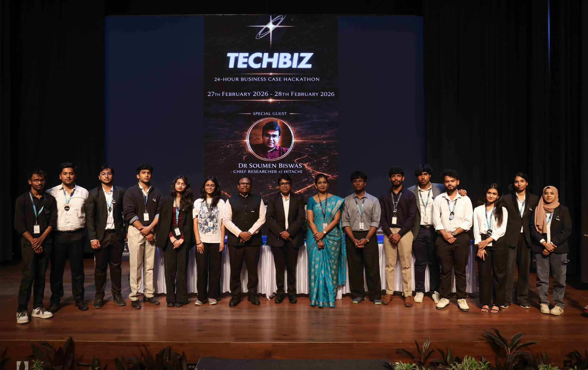
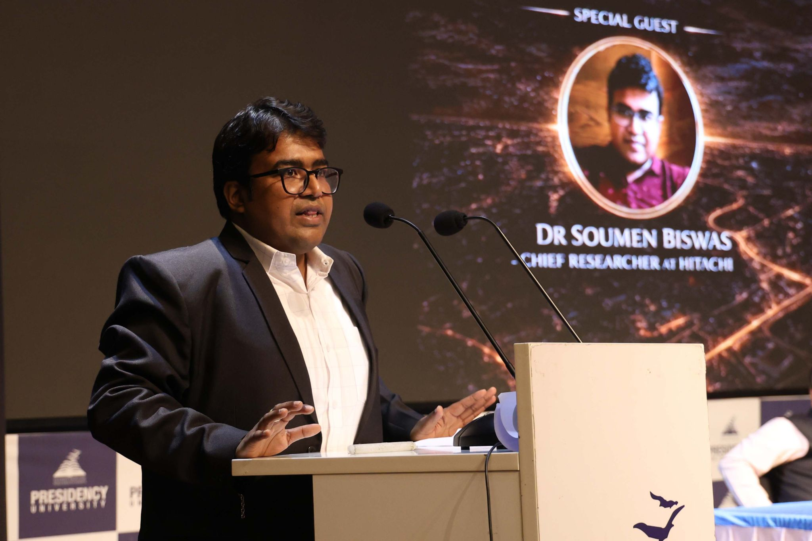
Chief Guest at SmartBIZ Hackathon
Honored to be invited as the Chief Guest at the SmartBIZ Hackathon 2026, organized by Presidency University, Bangalore.
2026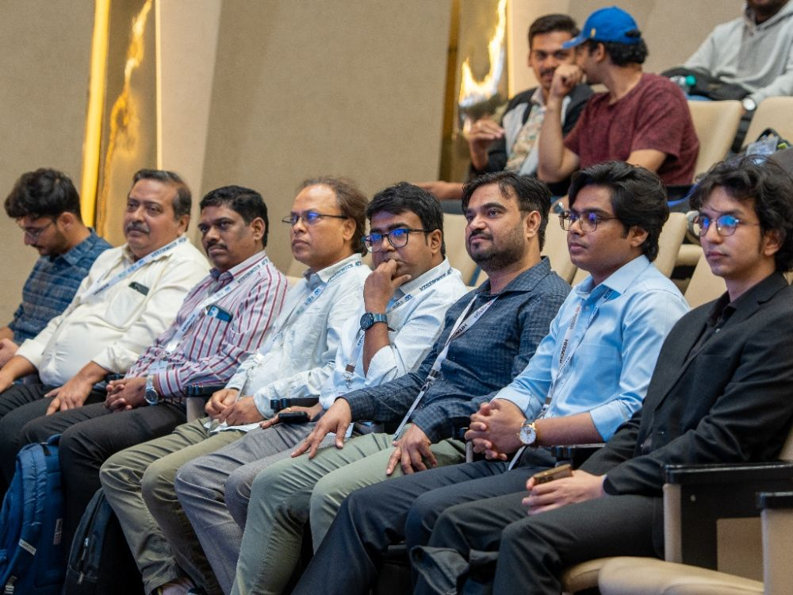
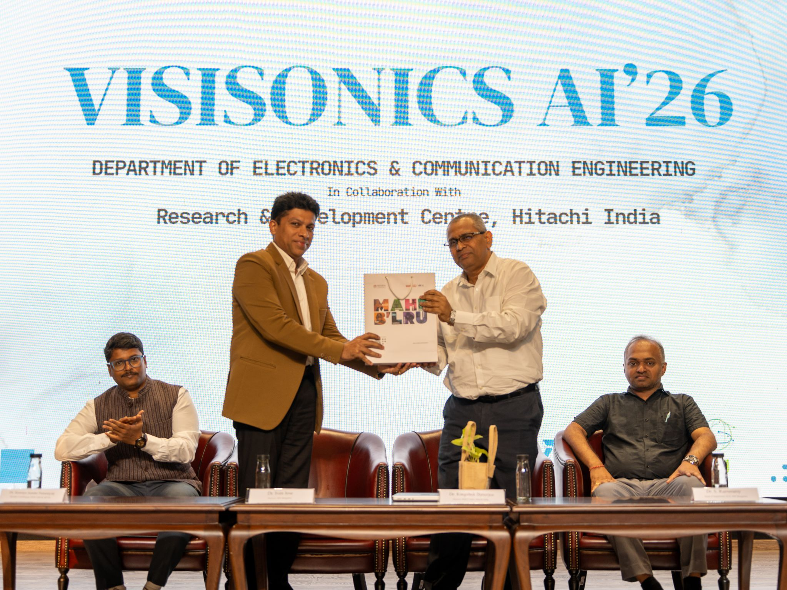
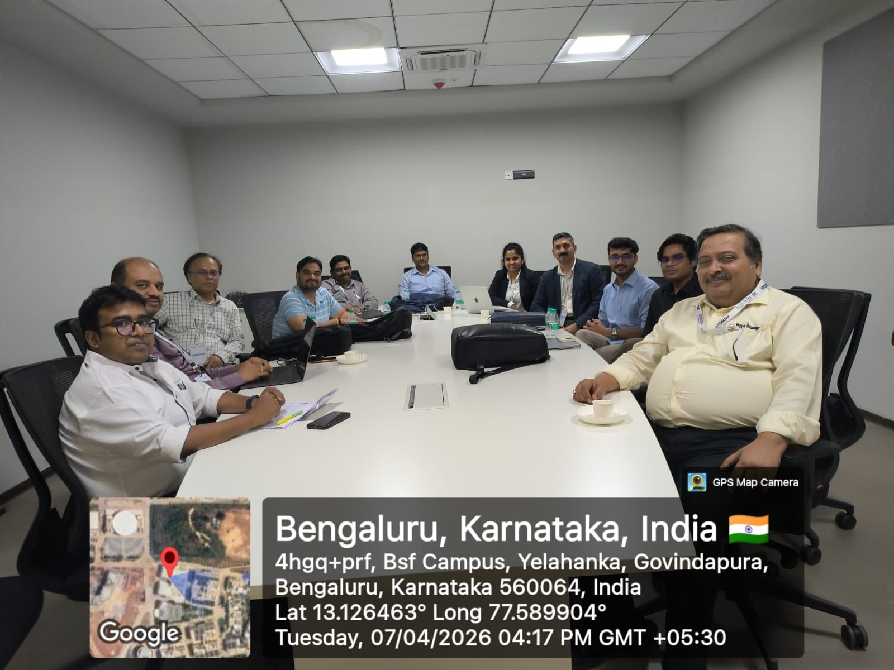
Lead Coordinator for VISISONICS AI'26
Spearheaded the national-level hackathon collaboratively organized by Hitachi India R&D and MIT Bangalore.
2026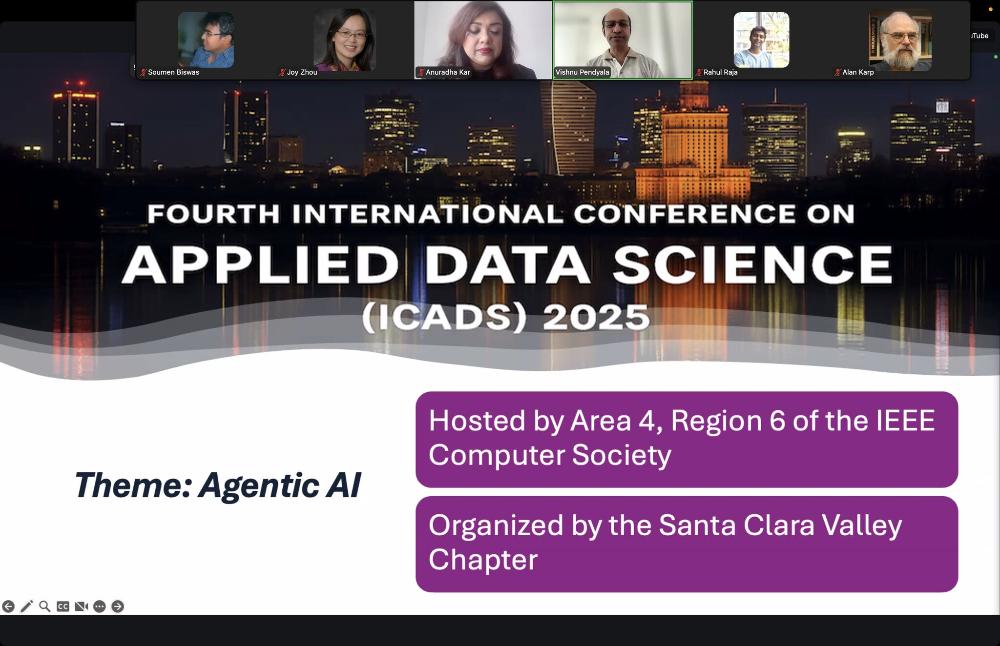
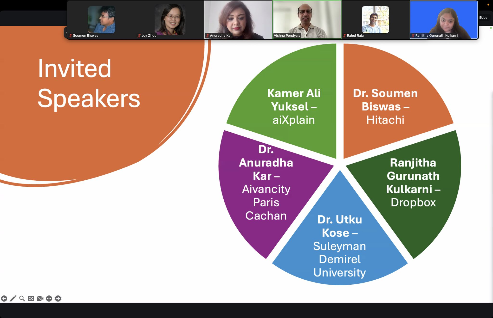
Invited Speaker at ICADS 2025
Delivered an impactful talk on Agentic AI and autonomous systems at the IEEE ICADS in Los Angeles.
2025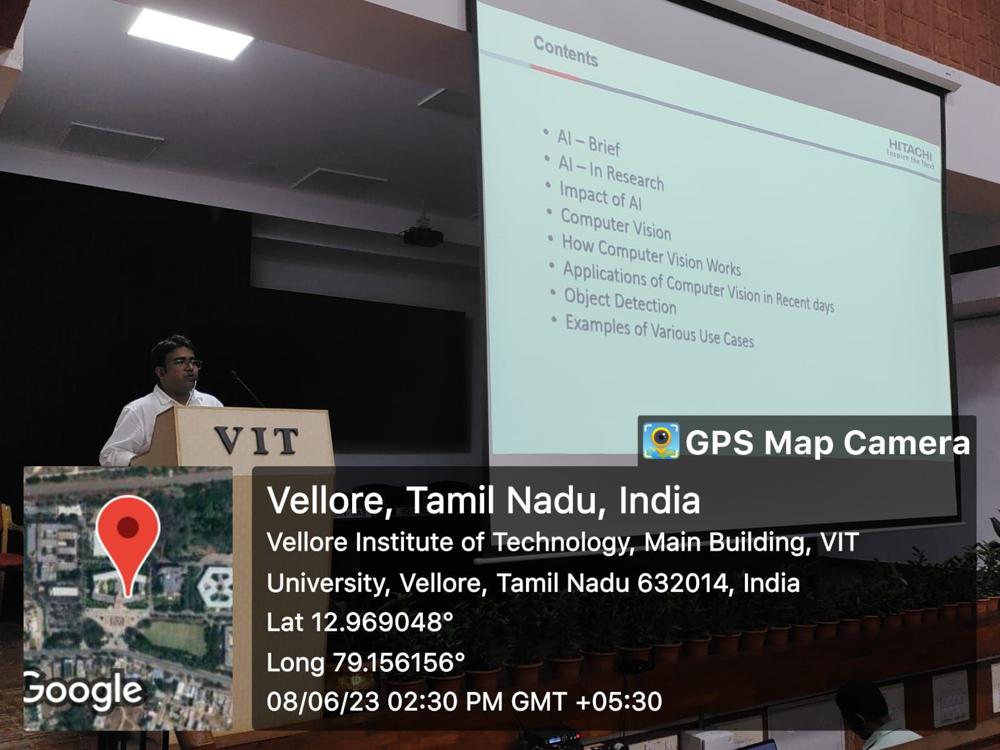
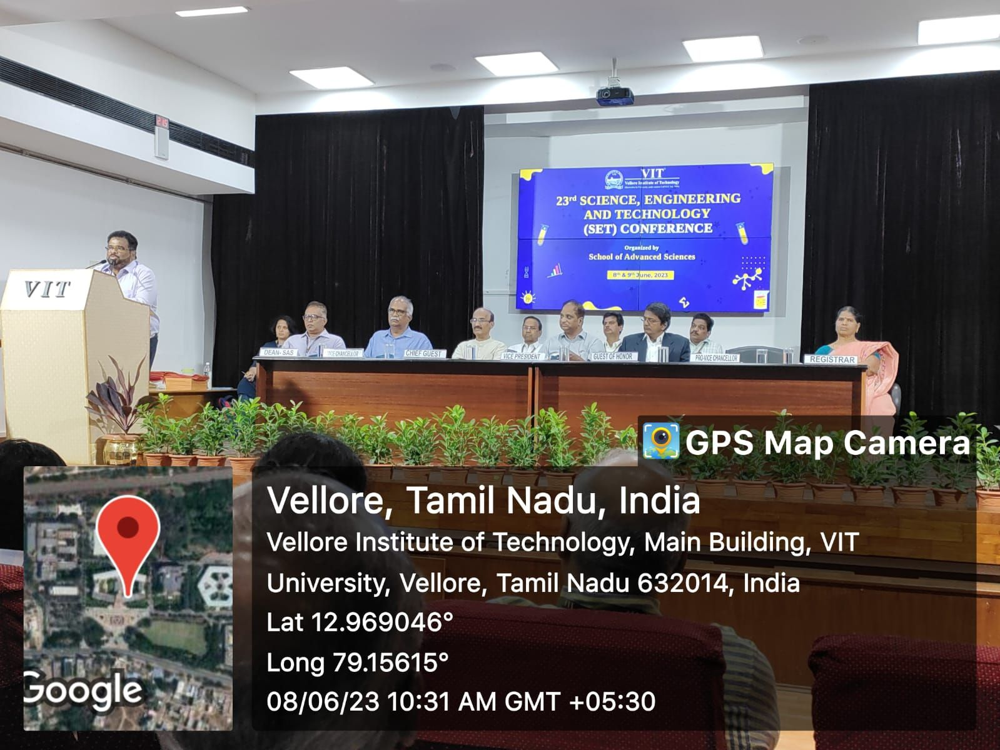
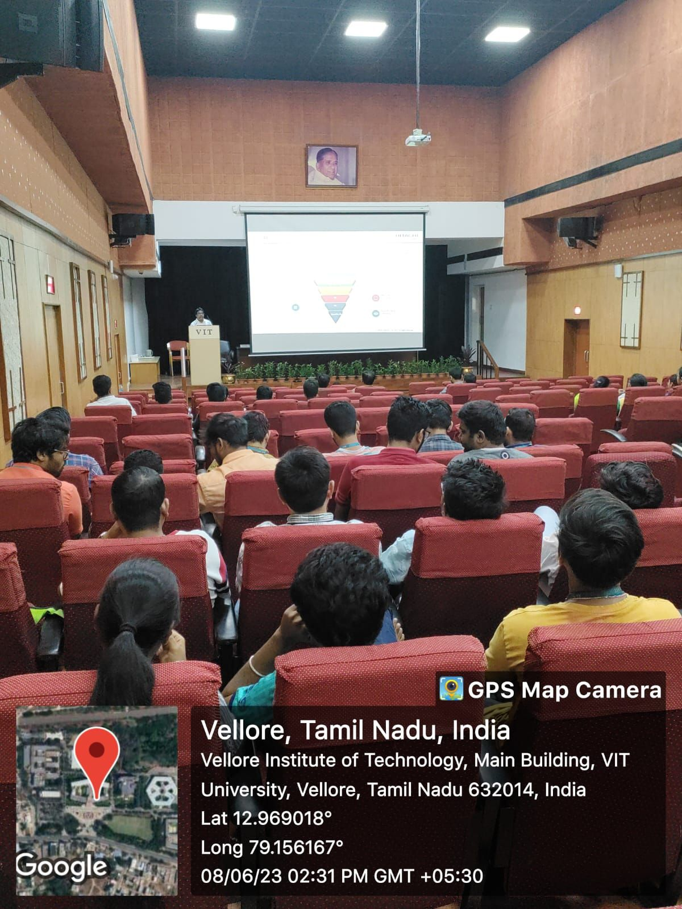
Keynote Speaker at SET 2023
Delivered the keynote address at the International Conference on Science Engineering and Technology (SET 2023), hosted by the SENSE Department, VIT Vellore.
2023All Publications
2026
Multi-dimensional attention transformer for vehicle and pedestrian detection in adverse weather
Scientific Reports, 2026
View details →YOLO-OSA: A ShuffleAttention-Enhanced YOLO Model for FOD Detection with Comprehensive Benchmarking on MS COCO
Proceedings of the IEEE/CVF Winter Conference on Applications of Computer …, 2026
View details →2025
SAFER-VLM: A Vision-Language and LLM Based Framework for Intelligent Warehouse Surveillance
2025 5th International Conference on Artificial Intelligence and Signal …, 2025
View details →End-to-End Rail Track Defect Monitoring Using Geo-Tagged Vision and Large Language Models: An Interactive LLM Assistant
2025 5th International Conference on Artificial Intelligence and Signal …, 2025
View details →2024
FF-Yolo: A Feature-Fusion Yolo Model for Small Scale FODs Detection in Airport Runways
Lecture Notes in Computer Science 15330, 2024
View details →DKT: A First Look at Dynamic Kernel Tuning for Pedestrian Attribute Recognition
2024 IEEE International Conference on Big Data (BigData), 5192-5200, 2024
View details →2023
Hi-GoTE: Hierarchical Group-Wise Temporal Ensembling for Semi-Supervised Pedestrian Attribute Recognition
2023 International Conference on Machine Learning and Applications (ICMLA …, 2023
View details →An improved method for surface defect detection in hot-rolled strip-steel
IEEJ Smart city workshop, 7-11, 2023
View details →2022
A novel convolution neural network model for wafer map defect patterns classification
2022 IEEE region 10 symposium (TENSYMP), 1-6, 2022
View details →LW-μDCNN: A Lightweight CNN Model for Human Activity Classification using Radar micro-Doppler Signatures
2022 IEEE International Symposium on Smart Electronic Systems (iSES), 73-77, 2022
View details →Effect of moisture content on dielectric properties of banana leaves and peels in frequency range of 1–20 GHz
Frequenz 76 (3-4), 131-143, 2022
View details →2021
Brain tumor classification using fine-tuned GoogLeNet features and machine learning algorithms: IoMT enabled CAD system
IEEE Journal of Biomedical and Health Informatics, 2021
View details →A level set model by regularizing local fitting energy and penalty energy term for image segmentation
Signal Processing, 108043, 2021
View details →State-of-the-Art Level Set Models and Their Performances in Image Segmentation: A Decade Review
Archives of Computational Methods in Engineering (Springer), 2021
View details →A COVID-19 DETECTION SYSTEM AND METHOD USING A CNN MODEL
AU Patent App. 2,021,105,722, 2021
View details →A Level Set Model Driven by New Signed Pressure Force Function for Image Segmentation
2021 National Conference on Communications (NCC), 2021
View details →2020
Active contours driven by modified LoG energy term and optimised penalty term for image segmentation
IET Image Processing 14, 2020
View details →A new binary level set model using L0 regularizer for image segmentation
Signal Processing 174, 107603, 2020
View details →2019
A Region-based Level Set Formulation Using Machine Learning Approach in Medical Image Segmentation
TENCON 2019 - 2019 IEEE Region 10 Conference (TENCON), 470-475, 2019
View details →A novel level set method for medical image segmentation
2019 IEEE Region 10 Symposium (TENSYMP), DOI:10.1109/TENSYMP46218.2019 …, 2019
View details →2018
Robust edge detection based on Modified Moore-Neighbor
Optik – International Journal for Light and Electron Optics, 2018
View details →A hybrid technique for blood cell detection
TENCON 2018-2018 IEEE Region 10 Conference, 0081-0085, 2018
View details →2017
A model of noise reduction using Gabor Kuwahara filter
2017 4th International Conference on Advanced Computing and Communication …, 2017
View details →FPGA based novel approach of medical image edge detection using XSG and its performance evaluation
2017 IEEE 4th International Conference on Advanced Computing and …, 2017
View details →Microscopic Blood Image Segmentation in Frequency Domain: Method, Analysis and Application
Preprint / Unknown
View details →2016
Blood cell detection using thresholding estimation based watershed transformation with Sobel filter in frequency domain
Procedia Computer Science 89, 651-657, 2016
View details →A new algorithm of image segmentation using curve fitting based higher order polynomial smoothing
Optik 127 (20), 8916-8925, 2016
View details →A NEW APPROACH OF EDGE DETECTION VIA POLYNOMIAL EVALUATION BASED GABOR FILTER
Far East Journal of Electronics and Communications 3 (1), 21-31, 2016
View details →HYPER GEOMETRICALLY MODIFIED ABSOLUTE MEAN BI-HISTOGRAM EQUALIZATION ON GRAY SCALE SEGMENTED IMAGES TO IMPROVE CONTRAST
Far East Journal of Electronics and Communications, 57-70, 2016
View details →Geo-Adaptive Histogram Equalization for image enhancement based on skewness-kurtosis level
International Conference on Recent Trends in Engineering and Material …, 2016
View details →Improved segmentation algorithm for brain tumor detection
International Conference on Recent Trends in Engineering and Material …, 2016
View details →Plant leaf disease identification using anisotropic diffusion based on modified k-means clustering
International Conference on Recent Trends in Engineering and Material …, 2016
View details →2013
Detection and Transferring of Malignant or Benign Brain Tumor from an MRI Report via Bluetooth Device
International Journal of Emerging Trends in Electrical and Electronics 1 (2 …, 2013
View details →2012
Back-Gate Biasing of the DG Transistors
International Journal of Soft Computing and Engineering, 2 (2), 240-245, 2012
View details →2011
A comparative study of CMOS and CPL 1-bit Full Adders with particular Emphasis on
IEEE National Conference on Electrical, Electronics and Computer Engineering, 2011
View details →Curriculum Vitae
Dr. Soumen Biswas - Professional CV
Download the complete Curriculum Vitae for a detailed overview of my research, publications, and professional experience.
Download PDF CVFormat: PDF | Size: Optimized